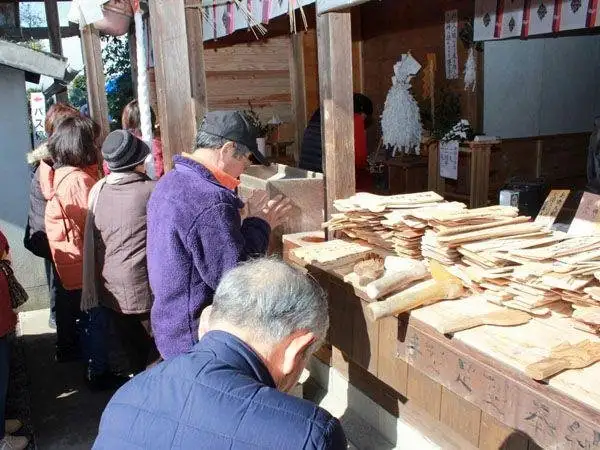
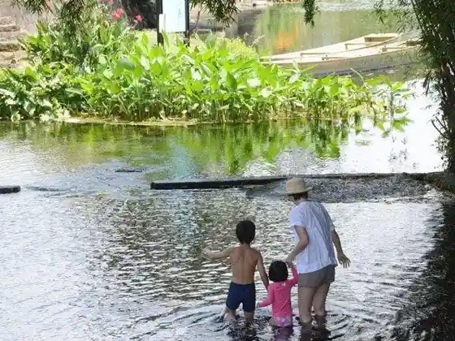
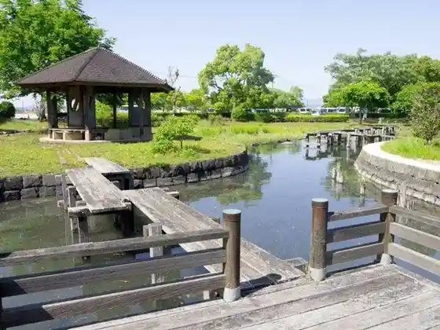
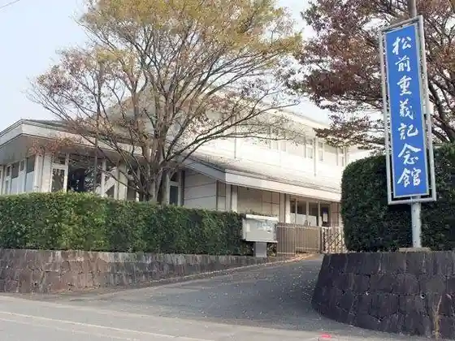

Japan / Kumamoto / Kashimamachi
Kashimamachi, Kumamoto
Kashimamachi · Kumamoto
Kashimamachi
Highlighted on the Kumamoto map.

Sights
Santorii Kyushu Kumamoto Kojo
Geroku Ka Yusui Gun

Fu Shima Shuhen Suihen Park

Kai Shrine (Ashide Kojin)
Matsumae Shigeyoshi Memorial Museum

Fu Shima Shrine
I Tera Burial Mound